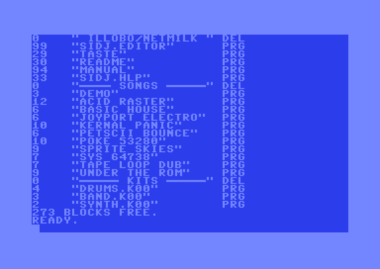

LOADING INSTRUCTIONS
Commodore 64 with disk drive
- Switch on the disk drive, then your Commodore 64.
- Insert the SIDJ disk in drive 8.
- Type
LOAD"SIDJ",8and press RETURN. - The screen will show
SEARCHING FOR SIDJ, thenLOADING, thenREADY. - Type
RUNand press RETURN. - The menu appears. Press RETURN on SIDJ EDITOR, or press 1.
The menu also starts T.A.S.T.E. (2), the short guide (3) and this manual (4). Use CRSR or a joystick in port 2 and RETURN, or the keys 1-4 or F1/F3/F5/F7. To skip the menu, type LOAD"SIDJ.EDITOR",8.
SIDJ starts on the SONG screen with a short demo song.


C64 Ultimate and Ultimate 64
- Mount the SIDJ disk image on drive 8, then load and run it as above. You can also start
SIDJ(the menu) orSIDJ.EDITORfrom the file browser. - SIDJ saves and loads on drive 8. Keep a disk image mounted there for your songs.
- To use the REU features, switch the REU on in the Ultimate menu before you start SIDJ.